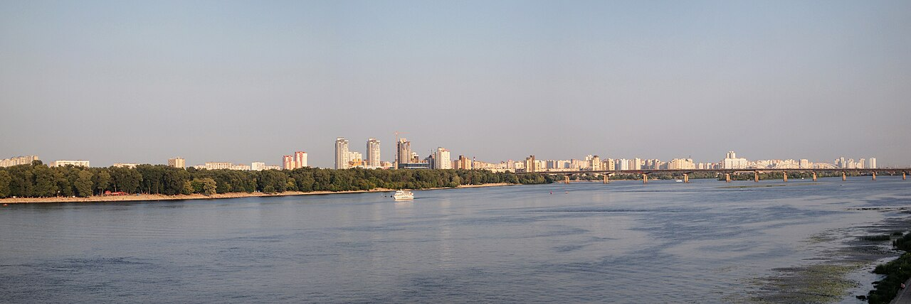

Дата і місце народження: 26 жовтня 2006 року, місто Київ.
Освіта: школа №95; Національний технічний університет України «Київський політехнічний інститут імені Ігоря Сікорського», група ІС-41.
Київ - моє рідне та улюблене місто, столиця України. Тут поєднуються історична архітектура, сучасні будівлі та зелені парки. Особливу атмосферу місту надають Дніпро, його набережні та краєвиди з київських пагорбів.
Натисніть на фотографію, щоб перейти на офіційний портал Києва.
